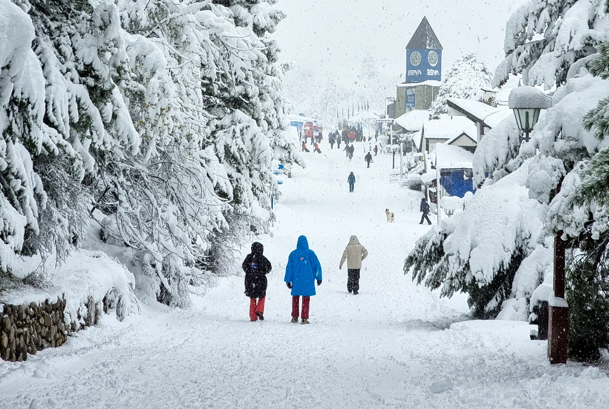
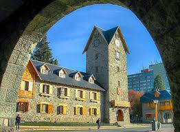
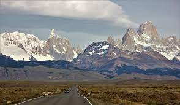
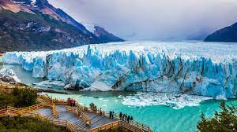
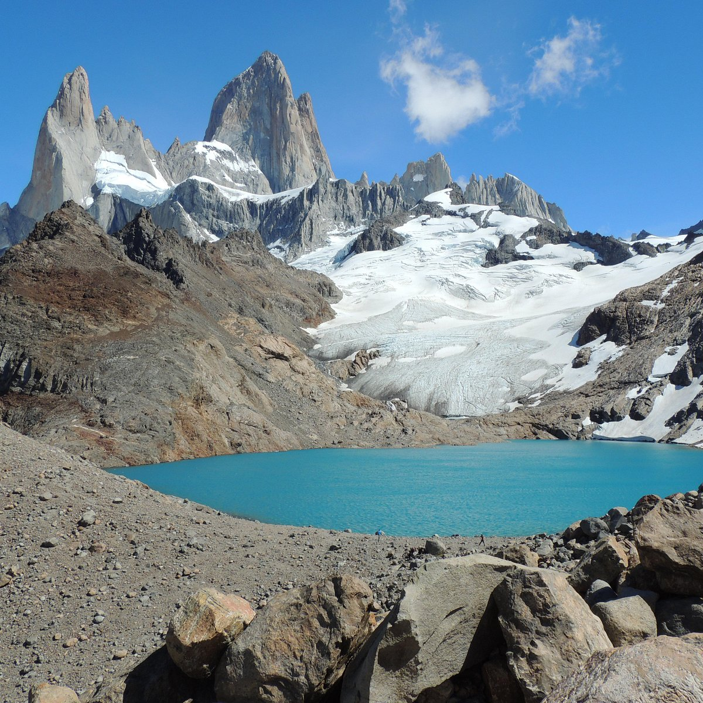
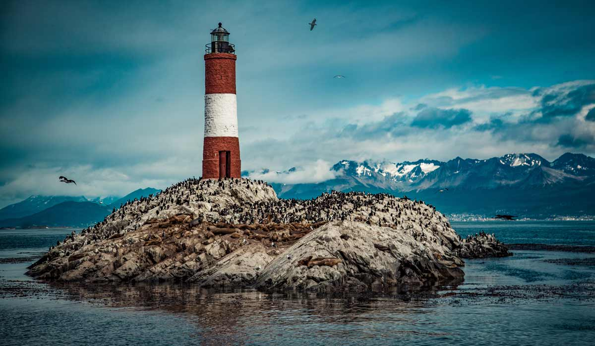
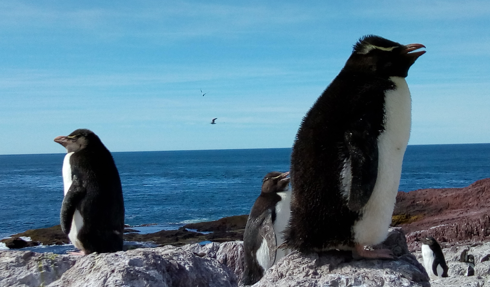

San Carlos de Bariloche durante el invierno.

Centro Cívico de San Carlos de Bariloche.

Camino al Chaltén por Ruta 40.

Glaciar Perito Moreno, Santa Cruz.

Laguna de los Tres, El Chaltén.

Faro del Fin del Mundo, Ushuaia.

Pingüinos en Monte León, Santa Cruz.Cajón del Azul, El Bolsón.